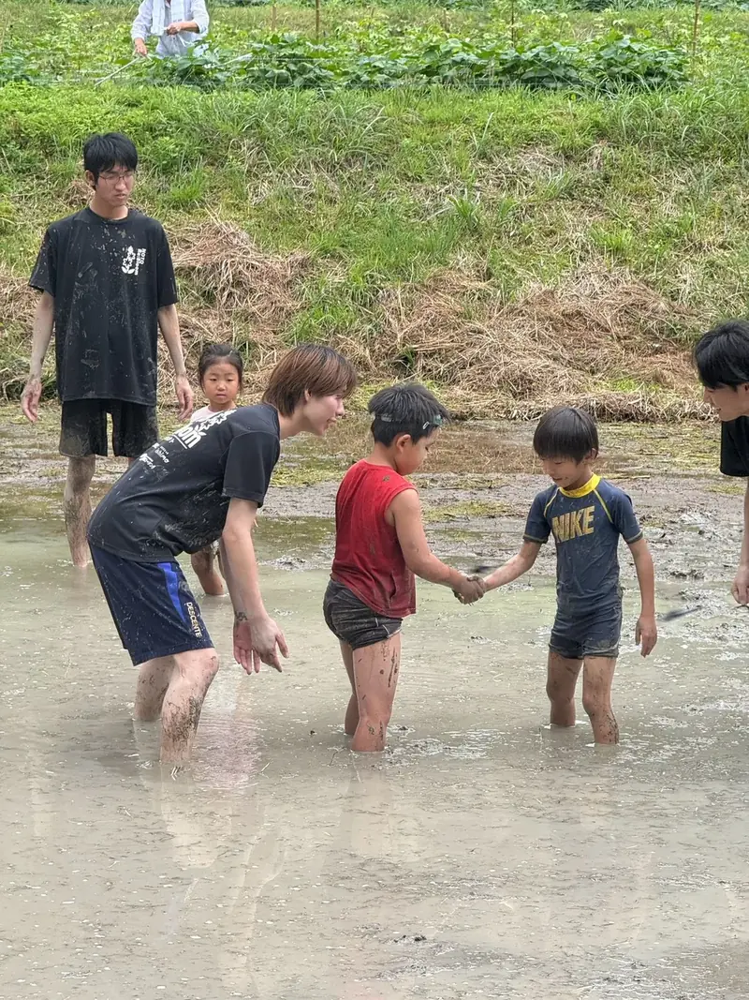
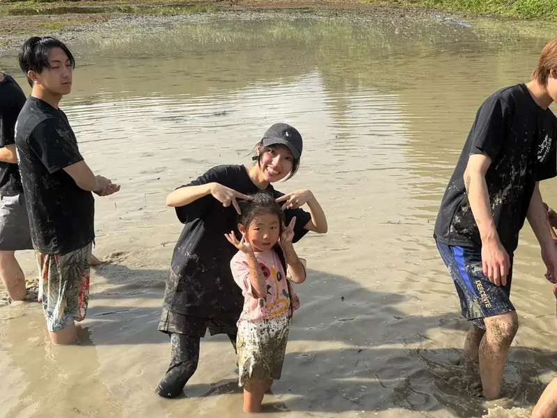
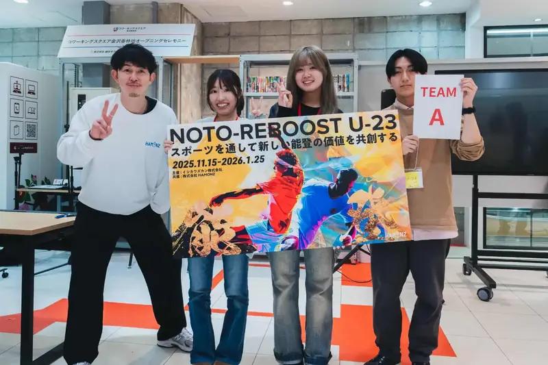

耕作放棄地
以前は耕作していたものの、一定期間作物を作らず、今後も耕作する意思がない土地を示す言葉です。
LEARN THE LAND
使われなくなった農地のこと、能登で起きていること、そして私たちが泥ん子運動会を始めた理由を、数字と現地の風景から順番にまとめました。

FROM THE LAND
数字や制度だけではなく、実際の農地と、そこで活動してきた人の姿から企画を考えています。
現地へ行くと、排水、足元、道の幅、周囲の暮らしなど、資料だけでは分からない条件が見えてきます。私たちはそうした現場の情報を起点に、実際にできることを一つずつ考えました。




BASIC WORDS
「耕作放棄地」「荒廃農地」「遊休農地」は似ていますが、使われ方や制度上の意味が異なります。
以前は耕作していたものの、一定期間作物を作らず、今後も耕作する意思がない土地を示す言葉です。
現に耕作されておらず、通常の農作業では作物の栽培が難しいと判断された農地です。
耕作されていない、または利用が著しく不十分な農地を制度上確認する言葉です。
出典：農林水産省「農業資源調査の概要」「用語の解説」「荒廃農地の発生防止・解消等」をもとに整理。
NUMBERS
令和6年度は、そのうち9.8万haが再生利用可能とされています。一年間に新たに発生した荒廃農地は2.4万haでした。
平成27年から令和6年度までの全国値です。令和3年度から調査内容が見直されているため、令和2年以前との単純比較には注意が必要です。
整地などによって再び使えると見込まれる土地と、再生が難しいと見込まれる土地があります。
再生利用が可能：9.8万ha
再生利用が困難：15.9万ha
出典：農林水産省「令和6年度の荒廃農地面積」「農地に関する統計」「荒廃農地の発生防止・解消等」。※令和6年能登半島地震の影響により、石川県内の一部市町では一部過年度値を用いて集計されています。
WHY IT HAPPENS
人のこと、暮らしのこと、土地の条件、災害。いくつもの事情が重なります。
農業を続ける人や、引き継ぐ人が見つかりにくくなっています。
水路や畦畔などを地域で一緒に管理することも難しくなります。
狭い区画や排水、傾斜などが、作業を続ける負担になることがあります。
農地や水路、農道の被害が、もう一度農業を始める大きな壁になります。
農地や水路の本格的な復旧は、農業者や行政、専門の方々が進めています。私たちはその代わりをするのではなく、まず土地を知る人、能登を訪れる人、地域の方と話す人を増やすところから始めます。
OUR IDEA
「能登に来た」「田んぼに入った」「地域の人と話した」という経験を、一日で終わらせず、その次の関わりへつなげたいと考えています。
実際に人が入ることで、安全面や排水、動線など次に考えるべきことが見えてきました。
「支援だから」だけではなく、「楽しそうだから行ってみたい」という入口をつくりました。
一緒に遊び、休む中で、地域・参加者・学生の間に自然な会話が生まれました。
2026年の実施で分かったことと地域とのつながりを、次の活動へ残します。